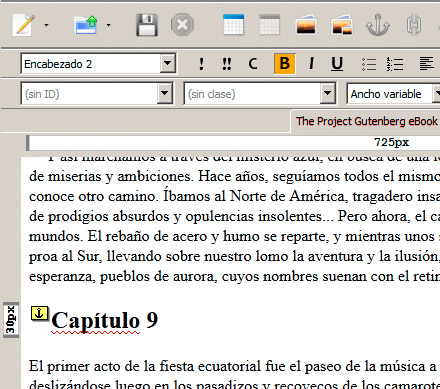

La creación de enlaces internos dentro de una página web nos permite realizar saltos, dentro de una misma página, a diferentes lugares de la misma. Es una técnica imprescindible si creamos páginas muy largas y simplemente innecesaria para páginas cortas. En todo caso es necesario conocerla.
Hay un ejemplo muy popular de enlaces internos, que es el uso que hace de ellos la archiconocida web http://www.wikipedia.es. Cada artículo de esta enciclopedia online suele comenzar con un pequeño índice de secciones, que nos sirve para saltar a diferentes partes del documento que estamos leyendo. Además, al final de cada sección encontramos un enlace para regresar de nuevo al principio.
Posiciones enlazables
En primer lugar, antes de poder saltar a un punto específico de una página, necesitamos definir qué puntos serán susceptibles de esos saltos. Para ello emplearemos la etiqueta <a>, pero seguida del parámetro name, así:
<a name="capitulo3"></a>
En la etiqueta podemos colocar algún otro elemento HTML, por ejemplo:
<a name="capitulo3"><h2>Capítulo 3</h2></a>
o de la siguiente manera:
<h2>Capítulo 3<a name="capitulo3"></a></h2>
Las dos son válidas.
En un editor web como BlueGriffon este tipo de elementos se insertan mediante el icono en forma de ancla (la etiqueta a viene de anchor, "ancla" en inglés). La figura muestra una etiqueta <a name> insertada en el editor.

Salto a enlaces internos
Ahora necesitamos saber cómo podremos acceder a esos enlaces internos. Es similar a cualquier referencia de las que hemos hecho hasta ahora, pero añadiendo el nombre del enlace interno precedido del signo #. Por ejemplo, para acceder a uno de estos enlaces desde la misma página, añadiríamos algo así:
<a href="#capitulo3">Saltar al capítulo 3</a>
o desde una página diferente, añadiríamos primero el nombre de la página:
<a href="organizacion.html#equipo">Consultar el equipo</a>
Saltos a la parte superior
Es muy habitual añadir en páginas largas un enlace similar a éste:
<a name="inicio">
y a lo largo del documento añadir alguna etiqueta de este tipo:
<a href="#inicio">Regresar a la parte superior</a>.
Así el usuario tiene un método rápido para subir hasta la parte de arriba de la página.
Pregunta Verdadero-Falso
Verdadero Falso
Actividad 1
En un documento largo crearemos un par de enlaces a lo largo del documento, para regresar a su parte superior.